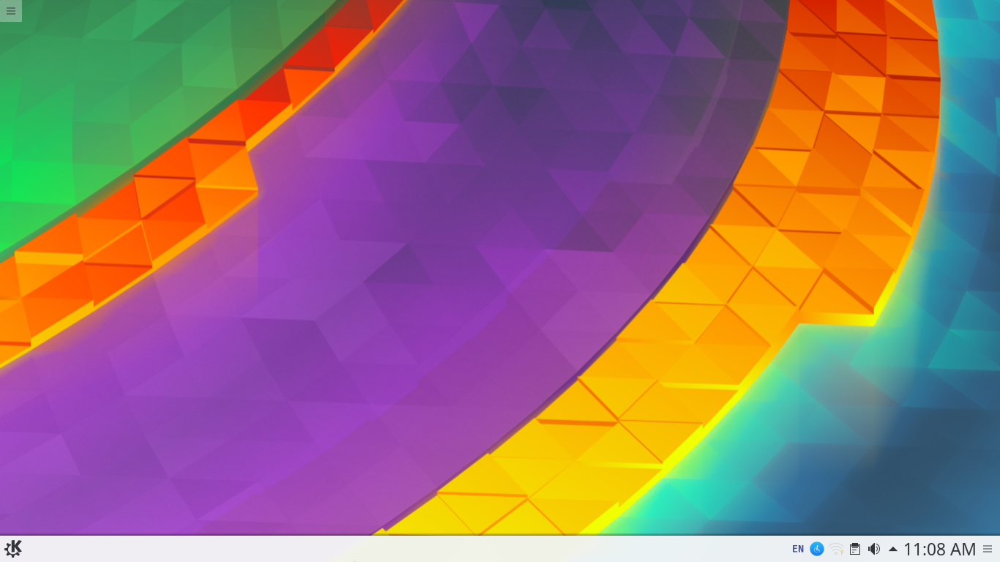

Organization of the data on your computer requires discipline and consistency. But often due to a tight schedule "housekeeping" gets de-prioritized. Things pile up. Files accumulate. Folders stack on and before you know it your desktop is a mess like your store in the basement. But while you can simply ignore your basement you have to work with your desktop daily.
Every-time you power on your computer you step in to disorder, chaos. You can't say for sure if your resume is placed in "new folder" or in "new folder 6" ? And when you come to think about it was it new folder on the "Desktop" or new folder in the "Documents"? Frantically clicking directories take you deeper and deeper into a maze until you find yourself trapped.
It is in times like these that one looks up into the sky seeking some divine guidance to show us the path towards salvation. You wait for a cuckoo to whisper something sweet in your ear. A melody that takes away all your troubles and leave you replenished,recharged. Ready to walk again. You wait for a song. But what do you get instead? Crows. Mocking you. Kreank! Kaaaw!! Kraowww!!!
And it is in times like this that you become aware of a cold sensation in your spine. You know that you have done something wrong. "CONFESS!!" the crows screech. Admit that you were wrong.
A just as you see the pack cornering you something incredible happens. Something bright. Something that can't quite be put in to words. A flash of light. A sense of warmth. Fresh breeze of air. And a clean desktop. No more scattered files. No more deep spiraling directories. Everything in order.

How sparvk brings order to your desktop?
By default a sparvk pod comes with a fixed desktop view. Meaning although you can place useful apps on the screen like a clock or a calendar but you can't create new files and folders. There is a separate place for all that and to access it you have to click on your applications menu and navigate to your home directory. Here you'd find a traditional view of your file system that allows you to work on files, save them and move them around.
The idea behind this default configuration is to help you keep your desktop organized. By moving all the files and folders behind an application menu you get a minimal structure for your documents. They won't be scattered all over the place.

You can easily find any file using the built in search capabilities. You can
open directories in new tabs within the same window giving you a way to have
multiple folders open at the same time. You can move around files
by opening split view panes. Dragging the folder from one pane and dropping it
in another. Each pane itself supports multiple tabs.
You can backup your files on a remote server so all your documents are
safe.
On sparvk pods when you turn on your computer you feel in total control.